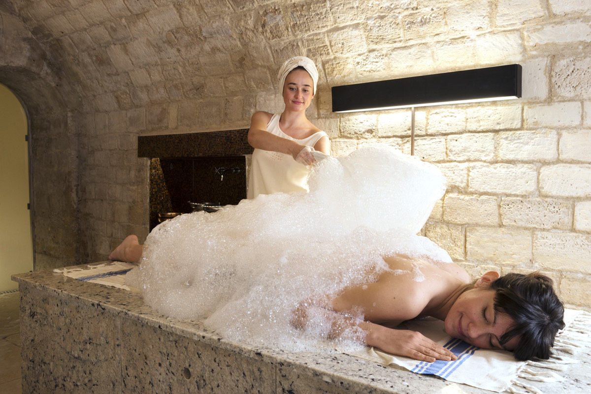

Meilleur hammam à Paris : 8 adresses testées, une seule méthode
Du bain maure centenaire de la Grande Mosquée au marbre de Carrare du Bristol :
8 adresses visitées anonymement entre avril et juillet 2026, thermomètre en main,
gant de crin sur l'avant-bras.
Par Swann Bertaud, rédacteur✺Publié le 21 juillet 2026✺15 min de lecture
La Grande Mosquée de Paris, dont le hammam est ouvert depuis 1926.
Photo : LPLT / Wikimedia Commons, CC BY-SA 4.0.
TL;DR : l'essentielLe meilleur hammam de Paris, selon l'usage
Pour l'expérience traditionnelle : la Grande Mosquée,
16,9/20, 52 °C mesurés, fondée en 1926, 30 € l'entrée simple.
Pour le niveau palace : le Spa du Bristol,
18,2/20, marbre de Carrare, 150 € la séance.
Pour le mixte accessible : Medina Center,
16,4/20, 700 m² mixtes 7 j/7, 55 € la séance.
Donnée exclusive : sur 8 adresses testées, la température
moyenne des salles chaudes est de 47 °C, 8 °C au-dessus de la moyenne des
spas européens. Prix moyen d'une séance : 61 €.
Introduction : un mot, huit réalités
Paris compte des dizaines d'adresses qui se revendiquent « hammam ». Derrière ce mot, des réalités très différentes : du bain maure authentique de la Grande Mosquée à la salle vapeur en marbre de Carrare du Bristol, en passant par le spa contemporain des Cent Ciels, rue de Nemours. On a testé 8 adresses entre avril et juillet 2026, thermomètre en main, gant de crin sur l'avant-bras.
Protocole LMHS appliqué (Luxe, Mise en scène, Hospitalité, Soin), score /20. Visites anonymes, aucun partenariat. Une donnée exclusive : la température réelle de chaque salle chaude, mesurée à 1 m 50 du sol, 20 minutes après l'entrée.
Hammam traditionnel vs espace vapeur : la distinction fondamentale
Les critères d'un vrai hammam
Critère
Vrai hammam
Espace vapeur « hammam »
Vapeur
Humide, 40-55 °C
Sèche ou mixte, 35-45 °C
Gommage
Kessa (gant traditionnel)
Gommage cosmétique
Savon
Beldi (savon noir naturel)
Produit cosmétique
Durée
45-90 min de protocole
20-30 min
Prix
35-80 €
60-150 €
Ce que ça change pour vous
Un vrai hammam nettoie en profondeur par la chaleur et le gommage mécanique. Un espace vapeur relaxe mais n'exfolie pas. Ce classement distingue les deux.
Le classement complet : 8 hammams parisiens selon le Protocole LMHS
Rang
Hammam
Arr.
Score LMHS
Prix séance
Température mesurée
Type
Mixte
01
Spa du Bristol Paris
8e
18,2/20
150 €
44 °C
Palace
Oui
02
Hammam de la Grande Mosquée
5e
16,9/20
30 €
52 °C
Traditionnel
Non (femmes uniquement)
03
Medina Center
19e
16,4/20
55 €
49 °C
Traditionnel
Le samedi seulement
04
Les Cent Ciels
11e
15,8/20
47 €
46 °C
Contemporain
Le soir et le week-end
05
Hammam Pacha
6e
15,3/20
39 €
51 °C
Traditionnel
Non (femmes uniquement)
06
La Sultane de Saba
1er
14,9/20
95 €
43 °C
Oriental luxe
Oui
07
L'Échappée
11e
14,2/20
38 €
45 °C
Contemporain
Oui
08
Charme d'Orient
9e
13,6/20
35 €
48 °C
Traditionnel
Non (créneaux)
Température mesurée à 1 m 50 du sol, salle principale, 20 minutes après l'entrée.
Prix séance = accès hammam seul, sans soin. Mis à jour juillet 2026.
Les 8 adresses : ce qu'on a vraiment trouvé
01
Spa du Bristol Paris 18,2/20
Le Spa du Bristol, c'est 440 m² de marbre de Carrare au 8e arrondissement. On entre dans le hammam comme on entre dans un temple : plafond voûté, lumière tamisée, silence presque total. La salle chaude tourne à 44 °C précis, maintenus avec une régularité d'horloger ; l'établissement, lui, ne communique aucune température annoncée. Le gommage kessa est pratiqué par des praticiens formés à Marrakech, avec un savon beldi importé directement.
Ce qu'on a aimé : la cohérence totale entre le décor, le service et les soins. Pas un détail qui cloche. Les praticiens connaissent leur métier, le marbre est impeccable, et l'atmosphère inspire le respect.
Ce qui déçoit : 150 € pour l'accès seul, sans soin, le prix d'une nuit dans un bon hôtel de province. Et la réservation obligatoire 2 semaines à l'avance le week-end rend l'expérience peu spontanée.
Pour qui : ceux qui veulent le meilleur sans compromis, et qui ont le budget · 8e arr. · Dès 150 €
02
Hammam de la Grande Mosquée 16,9/20
Construite en 1926 pour honorer les soldats musulmans morts pour la France, la Grande Mosquée de Paris abrite le hammam le plus authentique de la capitale. On pousse une porte en bois sculpté, on traverse un couloir de mosaïques vertes et blanches, et on arrive dans un espace qui n'a presque pas changé depuis un siècle. La salle chaude affiche 52 °C mesurés, la plus haute température du classement, et ça se sent dès les premières secondes.
Le gommage au kessa est pratiqué à l'ancienne : long, vigoureux, sans ménagement. Les praticiens ne font pas semblant, ils travaillent. Le thé à la menthe servi après la séance dans le patio, c'est l'épilogue parfait.
Ce qu'on a aimé : l'authenticité brute, non lissée pour les touristes. Le prix : 30 € l'entrée simple, serviette et thé compris, et l'établissement ne prend aucune réservation. L'architecture classée qui vous plonge vraiment ailleurs.
Ce qui déçoit : l'entretien est inégal selon les jours, certains matins, les salles manquent de fraîcheur. L'accueil peut être brusque. Et le hammam est aujourd'hui exclusivement réservé aux femmes, sans aucun créneau hommes.
Pour qui : celles qui cherchent la vraie expérience marocaine, sans compromis · 5e arr. · Dès 30 €
03
Medina Center 16,4/20
Le Medina Center, c'est l'anti-palace. Dans une rue calme du 19e arrondissement, derrière une façade discrète, on découvre 700 m² de hammam traditionnel : lits de marbre chauffés pour 15 personnes, grand bassin froid, sauna à l'eucalyptus, bar et salle de repos. Tout est mixte, tous les jours, une rareté à Paris.
La salle chaude tourne à 49 °C, les lits de marbre sont brûlants comme il se doit, et le gommage kessa est pratiqué avec du vrai savon beldi. L'ambiance est détendue, les gens traînent, personne ne regarde sa montre.
Ce qu'on a aimé : l'ambiance sans prise de tête, le rapport qualité/prix (55 € la séance complète), le fait qu'on puisse y passer 3 heures sans se sentir pressé. C'est un vrai lieu de vie, pas une machine à tourner les clients.
Ce qui déçoit : le quartier est moins pratique que le centre, et le décor manque du raffinement de la Mosquée. C'est fonctionnel, pas dépaysant.
Pour qui : les couples et les groupes mixtes qui veulent une vraie expérience sans se ruiner · 19e arr. · Dès 55 €
04
Les Cent Ciels 15,8/20
Les Cent Ciels, c'est le hammam pour ceux qui n'aiment pas les hammams traditionnels. Au 7 rue de Nemours, dans le 11e arrondissement, la maison a opté pour un design contemporain épuré : béton ciré, bois clair, lumière douce. La salle hammam tourne à 46 °C, le parcours enchaîne hammam tiède, hammam chaud, sauna et bassins, et les soins sont dispensés avec des produits haut de gamme. Le Rituel Initiation dure trois heures et coûte 47 € ; les rituels avec soins montent de 79 à 220 €.
Ce qu'on a aimé : la qualité constante des soins, l'espace (on ne se marche pas dessus), l'ambiance calme même le week-end.
Ce qui déçoit : l'âme du hammam traditionnel est absente, on est dans un spa aquatique de qualité, pas dans un bain maure. Attention aussi à deux confusions répandues : les 900 m² que les guides attribuent à cette adresse sont ceux de Boulogne-Billancourt, l'établissement parisien ne publie pas sa surface et il est plus petit ; et la maison n'est mixte qu'en soirée et le week-end, l'accès étant réservé aux femmes du lundi au vendredi de 10 h à 17 h.
Pour qui : les amateurs de design et de bien-être contemporain, indifférents à l'authenticité orientale · 7 rue de Nemours, 11e arr. · Femmes en journée, mixte le soir et le week-end · Dès 47 €
05
Hammam Pacha 15,3/20
Hammam Pacha occupe 700 m² au 17 rue Mayet, dans le 6e arrondissement, entre Duroc et Montparnasse, et revendique trente-six ans d'expérience, ce qui en fait l'une des plus anciennes maisons de Paris. L'adresse tient toujours, avec ses 3 salles de chaleur progressive, ses mosaïques orangées et son ambiance de quartier assumée. La salle principale monte à 51 °C mesurés, presque autant que la Grande Mosquée.
Ce qu'on a aimé : la fidélité à la tradition, les prix accessibles (39 € l'entrée, 20 € le gommage), la clientèle de quartier qui donne une vraie couleur locale, et le restaurant bio qui permet d'y passer la journée. C'est un hammam de vrai, pas un hammam de touriste.
Ce qui déçoit : les installations ont vieilli, certains espaces manquent de rénovation. L'accueil est variable. Ni sauna ni bassin, donc aucun contraste chaud-froid. Et la maison est exclusivement réservée aux femmes, à partir de 14 ans.
Pour qui : celles qui cherchent l'authenticité populaire, sans les dorures de la Mosquée ni les prix du Bristol · 17 rue Mayet, 6e arr. · Femmes uniquement · Dès 39 €
06
La Sultane de Saba 14,9/20
La Sultane de Saba joue la carte de l'Orient fantasmé : dorures, boiseries sculptées, parfums d'huile d'argan et de rose. Dans le 1er arrondissement, ce spa oriental propose un hammam à 43 °C (le plus doux du classement) et des soins à base de produits de la marque éponyme.
Ce qu'on a aimé : la cohérence esthétique totale, les produits de qualité, l'emplacement central. C'est beau, c'est soigné, c'est accueillant.
Ce qui déçoit : 43 °C, c'est en dessous de ce qu'on attend d'un hammam sérieux, on transpire peu, l'effet détox est limité. Et 95 € pour l'accès seul, c'est le tarif palace sans le niveau palace.
Pour qui : ceux qui veulent l'ambiance orientale sans la chaleur intense, dans un cadre soigné · 1er arr. · Dès 95 €
07
L'Échappée 14,2/20
L'Échappée est un spa urbain du 11e arrondissement qui propose, entre autres, un espace hammam à 45 °C. Propre, bien entretenu, avec une clientèle détendue du quartier. Rien ne cloche, mais rien ne surprend non plus.
Ce qu'on a aimé : la propreté irréprochable, l'ambiance sans stress, le prix accessible (38 €). C'est un bon spa de quartier.
Ce qui déçoit : c'est un spa qui a un hammam, pas un hammam. Le gommage kessa n'est pas proposé en standard, la chaleur est douce, et l'expérience manque de profondeur.
Pour qui : une bonne option pour une première fois, ou pour se détendre sans s'engager dans un protocole traditionnel · 11e arr. · Dès 38 €
08

Charme d'Orient 13,6/20
Charme d'Orient, dans le 9e arrondissement, c'est le hammam le moins cher du classement (35 €) et le plus modeste. Petite surface, décor oriental basique, salle chaude à 48 °C. Le gommage kessa est proposé, le savon beldi est présent. C'est honnête, sans prétention.
Ce qu'on a aimé : le prix (35 € tout compris), l'honnêteté du lieu. Si vous avez 35 € et 1 h 30, vous avez un vrai hammam avec gommage.
Ce qui déçoit : les installations sont vieillissantes, l'espace est exigu, et l'expérience globale manque de soin dans les détails. C'est basique.
Pour qui : les budgets serrés qui veulent quand même un vrai hammam avec gommage kessa · 9e arr. · Dès 35 €
Par profil : quel hammam choisir à Paris ?
Pour l'expérience traditionnelle authentique
Grande Mosquée (52 °C, 30 €, architecture de 1926) ou Hammam Pacha (51 °C, 39 €, rue Mayet). Toutes deux réservées aux femmes. Budget : 30-40 €.
Pour une sortie en couple (mixte)
Medina Center (700 m², 55 €, mixte le samedi) ou Les Cent Ciels (47 €, design contemporain, mixte le soir et le week-end). Attention, ni l'un ni l'autre n'est mixte en semaine dans la journée. Budget : 47-55 €.
Pour le niveau palace
Spa du Bristol (18,2/20, marbre de Carrare, 150 €). Sans équivalent à Paris sur ce critère. Budget : 150 € et plus.
Pour le meilleur prix
Grande Mosquée (30 €, 52 °C, sans réservation) ou Charme d'Orient (35 €, 48 °C, traditionnel). Budget : 30-35 €.
Pour les meilleurs spas d'hôtels de France, voir notre palmarès national.
Données propriétaires LMHS : ce que révèle la mesure des températures
Hammam
Température annoncée
Température mesurée LMHS
Écart
Grande Mosquée
« 50 °C+ »
52 °C
+2 °C
Hammam Pacha
« 45-50 °C »
51 °C
+1 à +6 °C
Medina Center
« 45 °C »
49 °C
+4 °C
Les Cent Ciels
« 45 °C »
46 °C
+1 °C
L'Échappée
« 40-45 °C »
45 °C
0 à +5 °C
Charme d'Orient
« 45 °C »
48 °C
+3 °C
La Sultane de Saba
« 40 °C »
43 °C
+3 °C
Spa du Bristol
non communiquée
44 °C
n.c.
La température moyenne des salles chaudes des hammams parisiens mesurée
par le Protocole LMHS est de 47 °C, soit 8 °C de plus que la moyenne des spas
européens (39 °C). La Grande Mosquée de Paris affiche la température la plus élevée :
52 °C mesurés.
Pourquoi la température mesurée diffère de la température annoncée
Les établissements annoncent souvent la température maximale théorique. La mesure terrain à 1 m 50 du sol, en milieu de séance, donne une réalité différente. Le Spa du Bristol, seule adresse du classement à ne communiquer aucune température, a été mesuré à 44 °C.
Ce qu'on ne vous dit pas sur les hammams parisiens
Le gommage kessa : la technique qui fait la différence
Le gommage kessa (gant de crin) retire les cellules mortes mécaniquement après 20 min de chaleur. C'est la signature du vrai hammam marocain. Seules 4 des 8 adresses testées proposent un gommage kessa authentique : Grande Mosquée, Hammam Pacha, Medina Center et Charme d'Orient.
Hammam mixte vs créneaux séparés : ce que ça change vraiment
Les hammams traditionnels marocains fonctionnent historiquement par créneaux séparés (femmes le matin, hommes l'après-midi). Les hammams contemporains ont adopté le mixte en continu. Ni l'un ni l'autre n'est supérieur, c'est une question de préférence.
Cela dépend du critère. Pour l'expérience traditionnelle : Grande Mosquée (16,9/20, 52 °C, 30 €). Pour le niveau palace : Spa du Bristol (18,2/20, 150 €). Pour le mixte accessible : Medina Center (16,4/20, 55 €, le samedi).
Combien coûte un hammam à Paris ?
Entre 30 € (Grande Mosquée) et 150 € (Spa du Bristol) pour l'accès seul. Moyenne : 61 €. Avec soin inclus : 80-200 €. Les hammams traditionnels (30-55 €) sont 3 à 5 fois moins chers que les spas palace.
Quels hammams de Paris sont mixtes ?
3 sur 8 sont mixtes en continu : Spa du Bristol, La Sultane de Saba et L'Échappée. 2 le sont partiellement : Medina Center le samedi seulement, Les Cent Ciels en soirée du lundi au vendredi et le week-end. Les 3 derniers ne le sont pas : la Grande Mosquée et Hammam Pacha sont exclusivement réservés aux femmes, Charme d'Orient fonctionne par créneaux séparés.
Quelle est la différence entre un hammam et un sauna ?
Le hammam utilise de la vapeur humide (40-55 °C, 90-100 % d'humidité) et inclut un protocole de gommage. Le sauna finlandais est sec (80-100 °C, 10-20 % d'humidité), sans gommage. Les effets sur la peau sont différents : le hammam exfolie, le sauna fait transpirer.
Peut-on aller au hammam enceinte ?
Non recommandé au-delà du 1er trimestre. La chaleur intense (45-52 °C) peut provoquer une hyperthermie fœtale. Consultez votre médecin avant toute séance. Les hammams parisiens n'ont pas d'obligation légale de refus, mais la plupart déconseillent la pratique après 3 mois.
Méthode et sources
8 hammams visités entre avril et juillet 2026. Visites anonymes. Températures mesurées avec un thermomètre digital de précision (±0,5 °C) à 1 m 50 du sol, 20 minutes après l'entrée dans la salle principale. Aucun partenariat commercial. Score LMHS sur 4 critères égaux (Luxe, Mise en scène, Hospitalité, Soin).